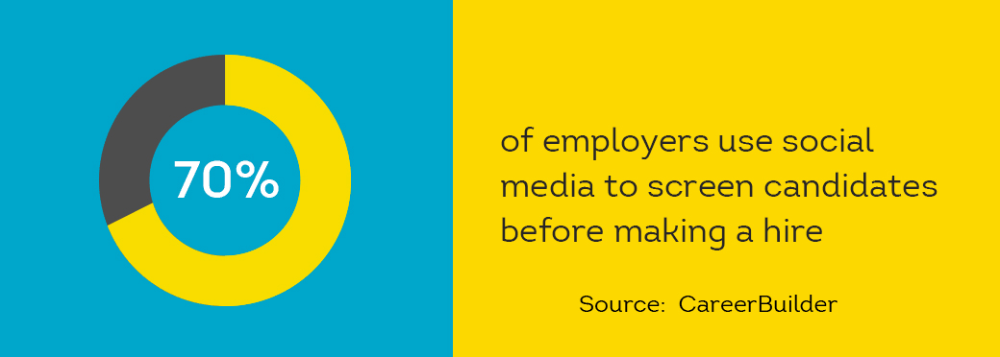

You just finished interviewing a potential new hire. The person looks good on paper and was even better face-to-face. Your next step should be running a background check.
Background checks on job applicants is critical to you onboarding the right people. But the ways to go about screening a prospective employee vary in time, cost, and accuracy.
The following guide breaks down different ways to run a pre-employment background check, starting with free online search results and ending with full-service, web-based screening from ShareAble for Hires.
It’s free. It’s fast. It’s easy to understand why 70 percent of employers turn to the internet to dig into an applicant’s background. With social media, LinkedIn profiles, and corporate websites listing employee bios, finding information about a potential employee can be simple.

But, the fastest route to checking someone’s background can many times lead you down the wrong rabbit hole. A candidate’s online information might be outdated, incomplete, or altogether falsified. How much can you trust the job title you found in an old Facebook page? Are you even looking at the right Ramesh Patel? Small businesses have the most to lose when relying on inaccurate background data.
When you go to a county courthouse to pull public records on a potential employee, you have a high chance that the records are accurate. This is a relatively inexpensive option for finding background information, and usually just requires you fill out an information-request form.
A downside to this antiquated approach is that the information located in these county and municipal courts is limited to records within that jurisdiction. If you’re trying to hire Dan Anderson in County A, they may not have records showing that Dan got a DUI in County B. Because local courts only return records, the info may not actually match your applicant.
To mitigate risk, lots of employers still rely on background checks from traditional third-party services. These companies offer a wide variety of screening reports, as well as volume-based pricing which can be attractive to large companies with frequent screening needs.
The biggest criticism of this time-tested route is its long lead time. You can spend weeks in limbo, waiting to receive reports. In the meantime, you’ll need an on-site inspection. Pay a membership fee. The list goes on. And the longer you keep your candidate waiting, the more risk you take that another business hires them out from under you.
Set aside some extra budget for hiring expenses, too—the volume-based pricing structures of many third-party services add up quickly. For a small business, these types of providers often offer more information than needed and for a higher cost, often making them an inefficient way to screen.
The newest kid on the background-check block isn’t even that new anymore—screening a job applicant online has been happening for years. The practice has gained a lot of attention recently from small businesses who may not have HR teams and specialists.
With a pre-employment background screening service like ShareAble for Hires, you simply invite your job applicant to authorize your screening, and, within minutes, you receive reliable, TransUnion reports that can help you make a smarter hiring decision.
No courthouse visits. No deep diving LinkedIn. Just a quick, free sign-up for tools that can verify your applicant’s identity before automatically running their name against 400 million criminal backgrounds and 230 million credit histories.
Gain critical insights almost instantly as ShareAble:
- Verifies ID through TransUnion
- Checks Sex Offender Registry
- Checks National Most Wanted
- Checks Federal Terror Watch List
- Checks State & County Criminal Records
- Adheres to all Federal Credit Reporting Rules
- Checks for Use of Deceased Person’s SSN
- Matches Name to SSN
- Reports Current & Previous Addresses
- Runs Detailed Credit Report
Too many small business owner try to go with their gut, and it’s not worth the risk to your business. Improve your chances of landing reliable employees by making ShareAble for Hires a part of your hiring process.